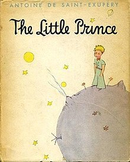
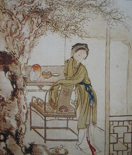
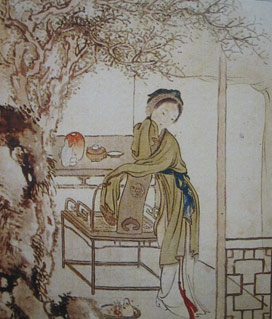
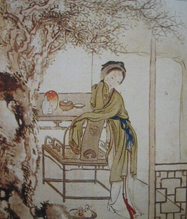

Some popular books...
 



An extremely powerful story of a young Southern Negro, from his late high school days through three years of college to his life in Harlem.His early training prepared him for a life of humility before white men, but through injustices- large and small, he came to realize that he was an "invisible man". People saw in him only a reflection of their preconceived ideas of what he was, denied his individuality, and ultimately did not see him at all. This theme, which has implications far beyond the obvious racial parallel, is skillfully handled. The incidents of the story are wholly absorbing. The boy's dismissal from college because of an innocent mistake, his shocked reaction to the anonymity of the North and to Harlem, his nightmare experiences on a one-day job in a paint factory and in the hospital, his lightning success as the Harlem leader of a communistic organization known as the Brotherhood, his involvement in black versus white and black versus black clashes and his disillusion and understanding of his invisibility- all climax naturally in scenes of violence and riot, followed by a retreat which is both literal and figurative. Parts of this experience may have been told before, but never with such freshness, intensity and power. This is Ellison's first novel, but he has complete control of his story and his style. Watch it.
Three-quarters of the way through Lisa Halliday’s debut novel, “Asymmetry,” a British foreign correspondent named Alistair is spending Christmas on a compound outside of Baghdad. His fellow revelers include cameramen, defense contractors, United Nations employees and aid workers. Someone’s mother has FedExed a HoneyBaked ham from Maine; people are smoking by the swimming pool. It is 2003, just days after Saddam Hussein’s capture, and though the mood is optimistic, Alistair is worrying aloud about the ethics of his chosen profession, wondering if reporting on violence doesn’t indirectly abet violence and questioning why he’d rather be in a combat zone than reading a picture book to his son. But every time he returns to London, he begins to “spin out.” He can’t go home. “You observe what people do with their freedom — what they don’t do — and it’s impossible not to judge them for it,” he says. The line, embedded unceremoniously in the middle of a page-long paragraph, doubles, like so many others in “Asymmetry,” as literary criticism. Halliday’s novel is so strange and startlingly smart that its mere existence seems like commentary on the state of fiction. One finishes “Asymmetry” for the first or second (or like this reader, third) time and is left wondering what other writers are not doing with their freedom — and, like Alistair, judging them for it. Despite its title, “Asymmetry” comprises two seemingly unrelated sections of equal length, appended by a slim and quietly shocking coda. Halliday’s prose is clean and lean, almost reportorial in the style of W. G. Sebald, and like the murmurings of a shy person at a cocktail party, often comic only in single clauses. It’s a first novel that reads like the work of an author who has published many books over many years. […]
